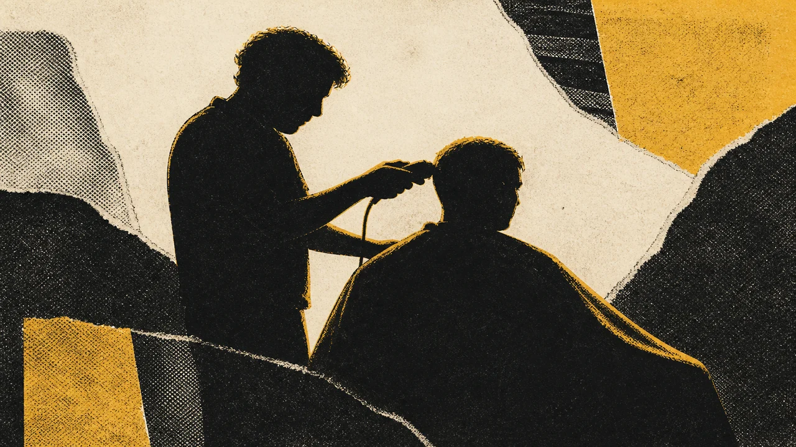
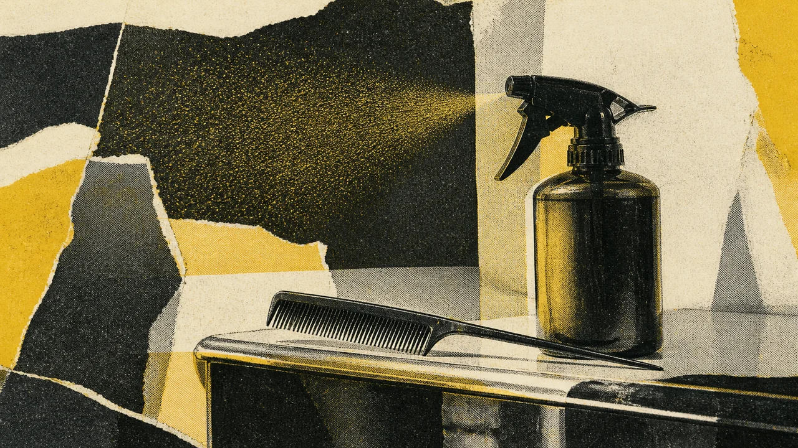
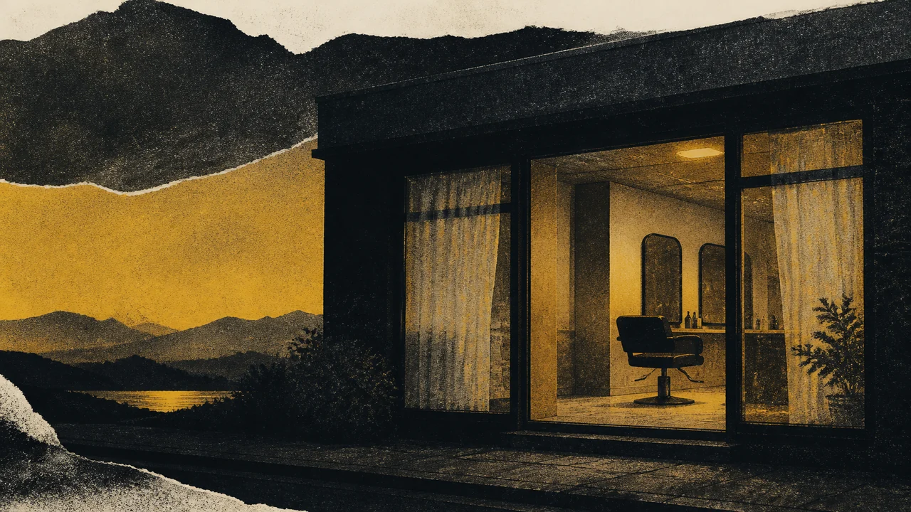
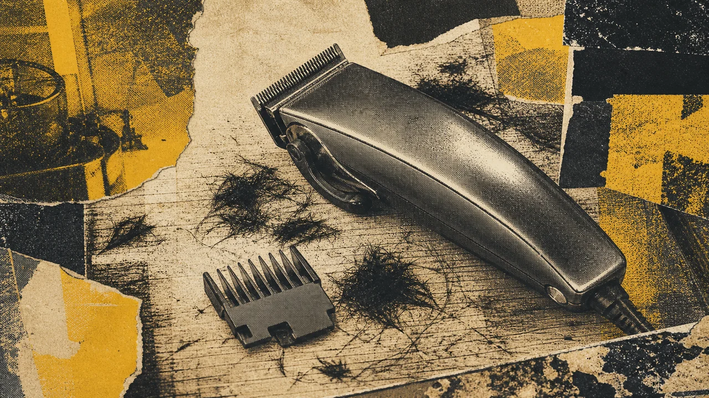
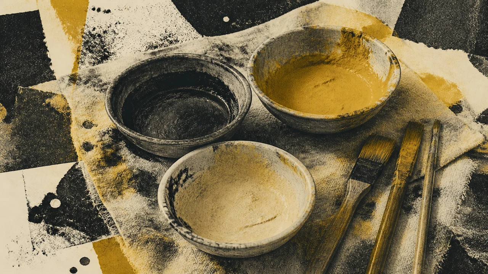
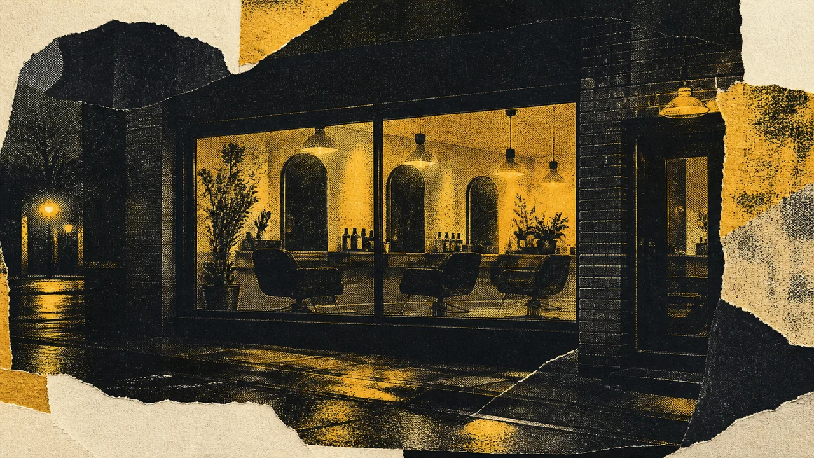
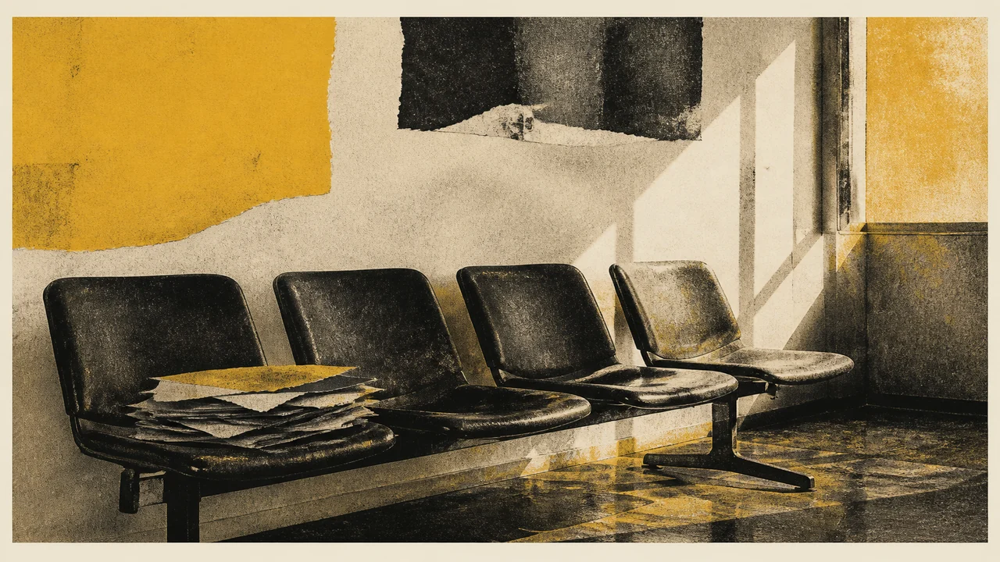
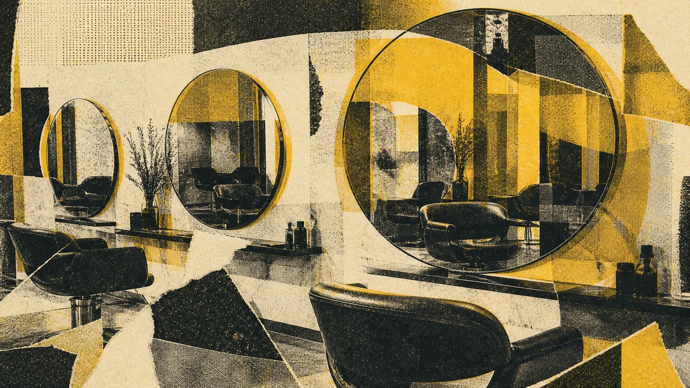
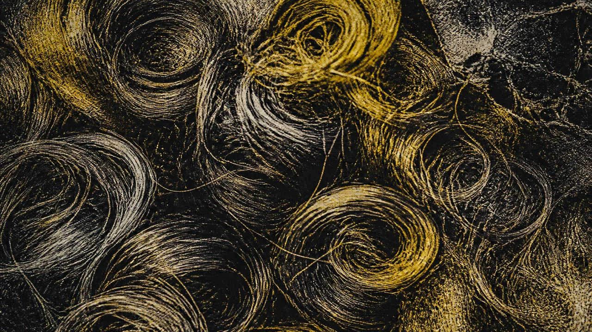

Haircut
Haircut is the first service on their page. Mack's is a studio where the cut is the work, done on South 10th Street, not a mall trim.
Mack's Hair Studio is a hair studio at 271 S 10th St in Philadelphia. Their service page names the work in two words: haircut and dye. You sit for a cut, you sit for color, or you sit for both. A phone number is not published here because it is not verified.
Work that belongs here.
Haircut is the first service on their page. Mack's is a studio where the cut is the work, done on South 10th Street, not a mall trim.
Dye is the second service they publish. Color lives in the same studio as the cut, so a change of shade does not send you to another chair across town.
271 S 10th St is the room. The studio is a Philadelphia hair studio. You come to that address for the haircut and the dye they list.






Mack's Hair Studio does not get a longer menu on this page than their service page earned. Haircut. Dye. A studio on South 10th Street. That is the honest offer. No invented balayage list, no invented celebrity client, no invented phone.
A hair studio visit is time in a chair with a named service. You go to 271 S 10th St for a cut, for color, or for both. The rest of a beauty menu can live on their site if they publish it. This page will not invent it.

The work on the ground.
The studio is at 271 S 10th St, Philadelphia. You go to the room. The work does not start on a phone we cannot verify.
Haircut is the published cut service. The chair time is for the hair in front of the stylist, in this studio.
Dye is the published color service. Cut and color can live in one visit because both are on their service page.

Ready when the work starts.
Two verbs are enough when they are the ones the studio published. Mack's Hair Studio cuts and dyes hair on South 10th Street in Philadelphia.
Official siteWithout a verified phone, the studio still has a door. 271 S 10th St is where haircut and dye happen. Use their official site for the rest of the path in.
Official site
Different work. One standard.
271 S 10th St, Philadelphia, PA 19107
Philadelphia
Official site